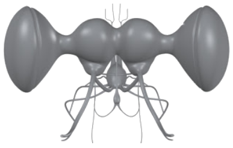

Tema 10. El sistema nervioso

• Neuronas
• Histología del sistema nervioso
• Sistema nervioso central
• El cerebro
• Cordón nervioso ventral
• Sistemas periférico y visceral
Capítulo 17. El sistema nervioso (texto)
Presentación. Sistema nervioso
Modelo 3D de cerebro
Clase "Sistema nervioso"
7 de marzo 2022
Lecturas complementarias:
• The Insect Brain. Cronodon
• Why I’m Building a Model of the Bee Brain. Andrew Barron
• Sistema nervioso. Revisión bibliográfica por Vianey Mendoza (2019).